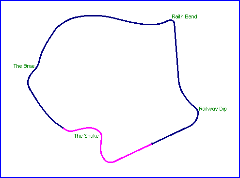

Beveridge Park - Scotland, United Kingdom
Type: Parkland Circuit
Length:
The Beveridge Park was opened in 1892, when Michael Beveridge
bequeathed the necessary finances from his estate to establish a public park in the
Scottish town of Kirkcaldy. The first event was the Kirkcaldy Grand Prix, which was
held on the 14th August 1948 and organised by the Kirkcaldy and District Motor Club
(KDMC). Meetings were held for a further forty years, ending in 1988, and covered all
classes of motorcycles from 50cc (for 2 years) up to 1000cc and sidecars. There is a
memorial to Jock Taylor, World Sidecar Champion and a KDMC member, in the park near the
Railway Dip. Cars raced at the park from 1952 to 1954, in joint meetings with the bikes,
but track width was a problem even for the 500cc formula cars of the time. The circuit
held it's final meeting in 1988, after which the council claimed that the events caused
damage to the surface of the roadway, thus posing a danger to the visiting public. The
surface has subsequently been repaved.
The photographs shown here are taken in the clockwise direction, which was the one used for the
car races in the early fifties. It should be noted however, that motorcycle races at the park were held
in the anticlockwise direction.
|| Contents | The Snake | The Brae | Raith Bend | Railway Dip || Home ||

Click on corner names above to view photographs of that section.
Text and photography by Daniel King & Richard King. Further
details supplied by Jake Drummond of the Kirkcaldy
and District Motor Club.
©racingcircuits.net - All rights reserved.